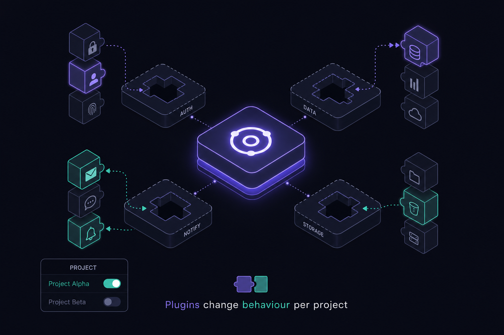
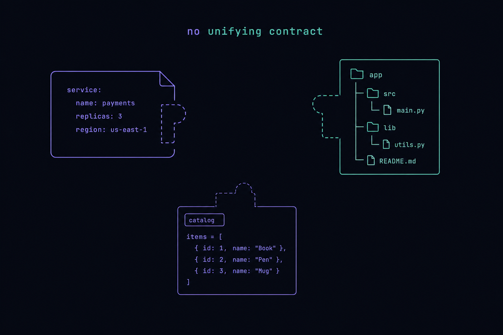
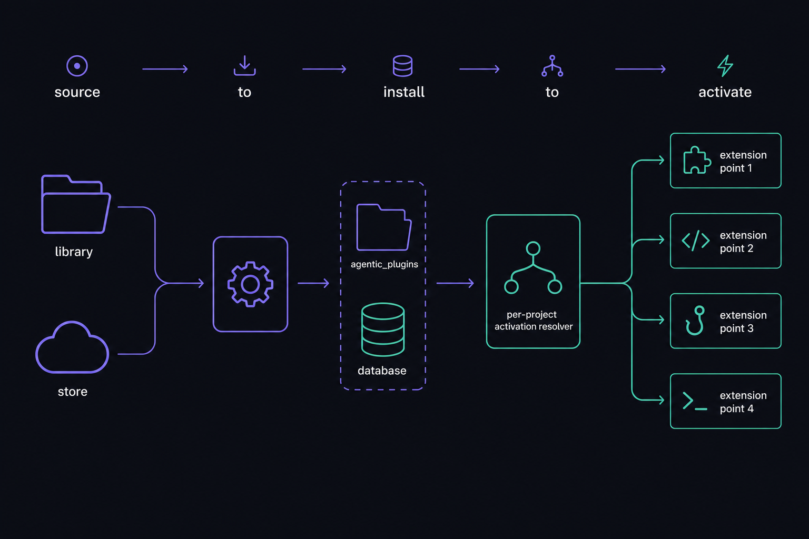
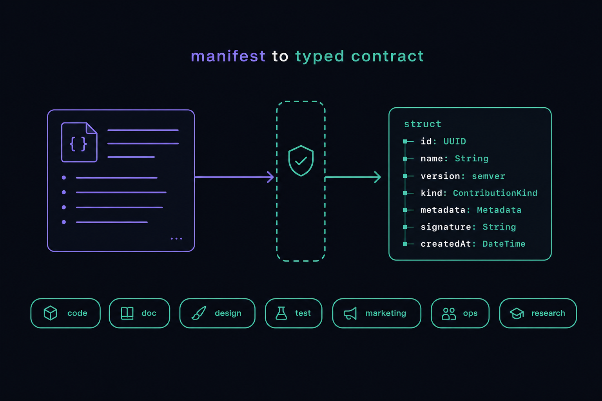
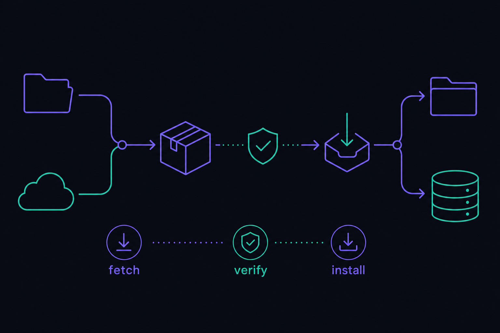
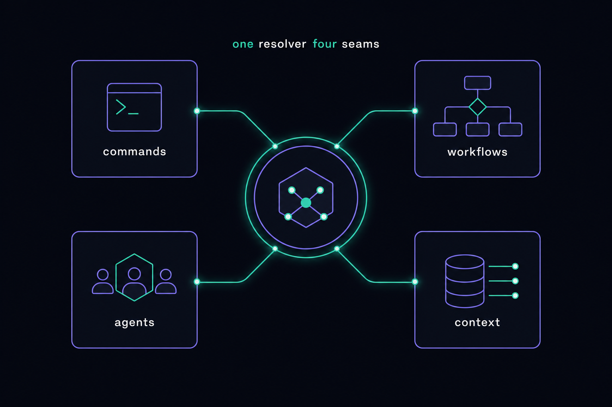
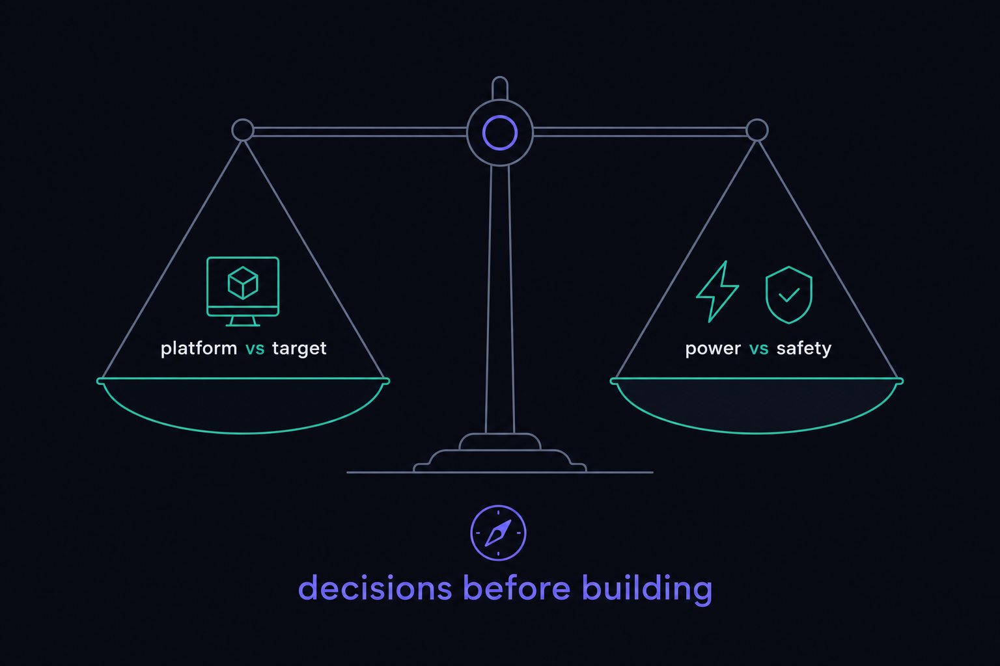
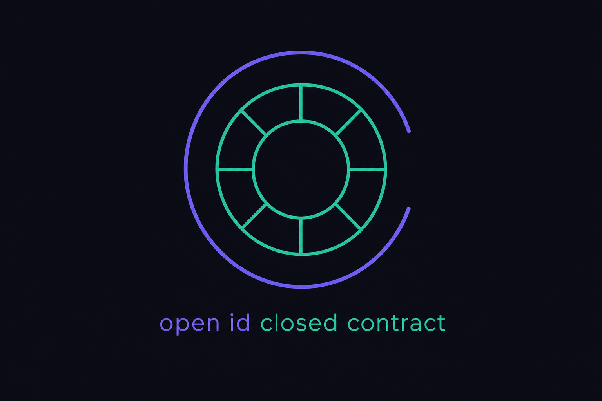

Plan: Agentic Plugin System — Foundation
Make the orchestration platform pluggable: a typed plugin contract, a local folder library and a real remote store, live install into agentic_plugins/, and per-project activation so switching the orchestrator's bound repo changes behaviour by the plugins active for it.

Purpose
Stand up the foundation of a first-class plugin system so the platform's behaviour is no longer hard-wired. A plugin is a versioned package that contributes to a closed set of extension points (slash commands, workflow/ADW types, agent templates, context-primer fragments, capability/stack detection, and — via an optional code layer — harness adapters). Plugins are authored in a local folder library, distributed through a remote store, installed live into agentic_plugins/, and activated per project. Switching the orchestrator's bound project recomputes the effective contribution set, so each target repo gets exactly the behaviour its active plugins define.
Problem
"Not every agentic-layer repo is the same," yet the platform's behaviour is fixed in core code. Today extensibility is unevenly distributed across ad-hoc seams: harness adapters live in a config map (RepoBuilder.Harness.Registry), command packs are filesystem dirs with a precedence chain (Commands.Resolver), agent/ADW/slash-command definitions are merged from app + working-dir roots (Definitions, Orchestrator.Templates), capabilities are per-language struct defaults (Projects.Capabilities) — and crucially the workflow/ADW catalog is hardcoded Elixir (WorkflowEngine.Catalog.types/0 + steps/2), the one extension point that is not externally pluggable. There is no unifying concept of a "plugin," no manifest contract, no install/uninstall lifecycle, no store, and no way to scope a bundle of behaviours to one project. An operator cannot package "the Elixir-Phoenix way of working" or "the Rust embedded way" and drop it in per repo.

Solution
Introduce a typed plugin contract modelled on the platform's revered keystone — the canonical Harness.Event sum type: a closed set of contribution kinds with an open plugin identity (a string id). A Plugin.Manifest (validated at the wire boundary with TypeCheck, then normalized into a strict struct) declares what a package contributes. A Plugins.Source behaviour abstracts where plugins come from — a LocalLibrary source over the plugin_library/ folder and a real RemoteStore source over HTTP (Req) — exactly mirroring the "add a harness = one adapter + one config entry" proof. An Installer fetches → verifies (checksum/trust) → unpacks into agentic_plugins/<id>@<version>/ → records a durable plugins row; a boot Loader reconciles disk vs DB and Code.require_files any code-bearing modules. Activation is a per-project join (project_plugins, nullable project_id = "the platform itself"). A Plugins.Activation resolver computes the effective contribution set for a project (cached, invalidated on activate/switch), and every existing seam is wired to consult it. Switching the orchestrator's project recomputes the set — behaviour changes live, per repo.

agentic_plugins/ → per-project Activation → the four wired seams.The contribution contract (the keystone)
# plugin.json — the wire manifest (validated by TypeCheck, normalized to Plugin.Manifest)
{
"schema": "agentic.plugin/1",
"id": "elixir-phoenix-way", # open identity (string), like harness keys
"name": "Elixir / Phoenix Way",
"version": "1.0.0", # semver
"description": "Phoenix-flavoured ADWs, commands, and review agents.",
"author": "robgilto",
"compat": { "platform": ">= 3.0.0" }, # checked against mix project version
"requires": { "capabilities": ["test_command"] },
"contributions": [
{ "kind": "command_pack", "path": "commands" },
{ "kind": "workflow_type", "path": "workflows/phoenix_sdlc.json" },
{ "kind": "agent_template", "path": "agents" },
{ "kind": "context_fragment","path": "context/phoenix.md" },
{ "kind": "capability", "path": "capabilities/elixir.json" }
],
"code": { # OPTIONAL — only for code-bearing plugins
"modules": ["lib/my_harness.ex"],
"on_load": "ElixirPhoenixWay.Plugin" # implements RepoBuilder.Plugins.Code
},
"checksum": "sha256:…" # integrity, verified on install
}The seven contribution kinds form a closed sum type (RepoBuilder.Plugins.Contribution); the plugin id stays open. Adding a new kind is a deliberate core edit (it means a new extension point); adding a new plugin is just a package — zero core change. This is the same trade the harness identity makes (BUILD_PROMPT §10).
Relevant Files
Existing Files (read & extend)
- existing
BUILD_PROMPT.md§10 — the "open identity + closed contract" extensibility doctrine this plan generalizes from harnesses to plugins. - existing
ai_docs/typed-elixir-standard.md— the enforced typed standard every new module must follow (the always-on doc). - existing
ai_docs/agentic-layer-adaptor.md— the Projects / command-pack / capability model the plugin system layers on top of. - existing
lib/repo_builder/harness/registry.ex— the canonical config-map + behaviour seam; the template forPlugins.Registryand the dynamic harness-adapter contribution. - existing
config/config.exs(~:78–340) — registry of:harnessesand ~25 config seams; add a:pluginsblock (dirs, sources, trust). - existing
lib/repo_builder/application.ex— supervision tree; addPlugins.LoaderafterRepo. - existing
lib/repo_builder/projects/project.ex+projects.ex— the per-project anchor; activation scopes toproject_id(nullable = platform). - existing
lib/repo_builder/commands/resolver.ex+pack.ex— add apluginprecedence layer (repo-local → plugins → pinned → stack → generic). - existing
lib/repo_builder/workflow_engine/catalog.ex— maketypes/1+steps/3project-aware and merge plugin-provided workflow types (the key code→data win). - existing
lib/repo_builder/orchestrator/templates.ex+definitions.ex— merge active-pluginagents/roots into template/agent discovery. - existing
lib/repo_builder/projects/context_primer.ex+profiler.ex+capabilities.ex— append plugin context fragments; consult plugin stack markers / capability defaults. - existing
lib/repo_builder_web/router.ex+live/console_live.ex— add/plugins; recompute active plugins on project switch (switch_orchestrator/2). - existing
.claude/commands/conditional_docs.md,AGENTS.md,README.md,.gitignore,priv/repo/seeds.exs— routing, conventions, ignore rules, seeds.
New Files
- new
agentic_plugins/.gitkeep— live install target (runtime contents git-ignored). - new
plugin_library/<sample>/…— the local folder library + 2–3 sample plugins (command-only, workflow-type, code-bearing harness). - new
lib/repo_builder/plugins.ex— context (soleRepocaller for plugin tables; install/uninstall/activate API). - new
lib/repo_builder/plugins/plugin.ex— installed-plugin schema (pluginstable). - new
lib/repo_builder/plugins/project_plugin.ex— per-project activation schema (project_pluginsjoin). - new
lib/repo_builder/plugins/manifest.ex— typedManifeststruct + wire-type (@type!) + parse/validate/normalize. - new
lib/repo_builder/plugins/contribution.ex— closed sum type of contribution kinds (the contract). - new
lib/repo_builder/plugins/source.ex—@behaviour(list/0,info/2,fetch/2). - new
lib/repo_builder/plugins/source/local_library.ex+remote_store.ex— the two source adapters. - new
lib/repo_builder/plugins/installer.ex— fetch → verify → unpack → register lifecycle. - new
lib/repo_builder/plugins/trust.ex— checksum/signature verification + trust policy. - new
lib/repo_builder/plugins/loader.ex— boot GenServer: scan disk, reconcile DB,Code.require_filecode plugins, callon_load. - new
lib/repo_builder/plugins/activation.ex— effective-contribution resolver + per-project cache + invalidation. - new
lib/repo_builder/plugins/registry.ex— config reader + active-contribution accessor (the single test seam). - new
lib/repo_builder/plugins/code.ex— optional@behaviourfor code-bearing plugins (on_load/1,contributions/0). - new
lib/repo_builder_web/live/plugins_live.ex— the store/management UI (/plugins). - new
priv/repo/migrations/*_create_plugins.exs+*_create_project_plugins.exs— the two tables. - new
ai_docs/plugin-authoring.md— the plugin-authoring reference (manifest schema, kinds, lifecycle, code+trust, worked examples). - new
test/repo_builder/plugins/*+test/repo_builder_web/live/plugins_live_test.exs— unit/boundary/integration tests.
Implementation Phases
IMPORTANT: Execute every phase and task step by step, in order, top to bottom. Each phase is independently green-gateable; do not advance until its phase gate passes.
Status markers: [] idle · [wip] in progress · [x] complete · [f] failed. All start as []; the Build Plan workflow updates them.
[] Phase 0: Manifest Contract, Package Format & Authoring Doc
The keystone. Define the closed contribution-kind sum type, the typed manifest with a TypeCheck wire boundary, the on-disk package layout, and write the authoring reference up front (it is both the contract's spec and a forcing function). No persistence or runtime wiring yet — pure types + parsing + docs.

Manifest; seven closed contribution kinds.0.1 Contribution kinds (closed contract)
[]Createlib/repo_builder/plugins/contribution.exwith a closed sum type of kinds::command_pack | :workflow_type | :agent_template | :context_fragment | :capability | :harness_adapter | :mcp_tools, each atypedstructcarryingpath(relative) + kind-specific fields; an umbrella@type tunion andkinds/0.[]Document each kind's required asset shape inline (@moduledoc), mirroring theHarness.Eventvariant docs.
0.2 Wire-validated manifest
[]Createlib/repo_builder/plugins/manifest.ex: atypedstruct enforce: truedomain struct (id, name, version, description, author, compat, requires, contributions, code, checksum, source) + a permissive TypeCheck@type!wire type for the raw JSON.[]Implementparse/1:Jason.decode/1→conforms/2wire check → normalize into the struct; returns{:ok, t} | {:error, reason}and never raises (per typed standard rule 6/8). UseString.to_existing_atom/1for kind atoms against the closed set — neverto_atom/1on untrusted input.[]Implementcompat?/2(manifest vsMix.Projectversion) andvalidate/2(assets referenced by each contribution exist on disk).[]Decide manifest filename =plugin.json(Jason is core; JSON is the store wire format). Note YAML support as a future kind-agnostic loader.
0.3 Authoring reference (write first)
[]Createai_docs/plugin-authoring.md: theagentic.plugin/1manifest schema, a contribution-kinds table (kind → asset layout → how it wires in → example), the package directory layout, the install/activate lifecycle, and the typed-Elixir rules plugin code must follow. Leave the code+trust section as a stub to be completed in Phases 2 & 5.[]Add the worked example skeletons (command-only, workflow-type, code-bearing) as fenced blocks.
0.4 Testing Strategy
ExUnit boundary tests on Manifest.parse/1: valid manifest round-trips to the struct; malformed JSON, unknown kind, missing required field, and bad semver each return a tagged {:error, _} and never raise. Property-style fixtures mirror the normalizer tests in BUILD_PROMPT §13.
[]mix test test/repo_builder/plugins/manifest_test.exs— parse/validate/compat all green; no raises on bad input.[]mix compile --warnings-as-errors— closed sum type + structs compile clean.[]mix credo --strict— every public fn has an@spec.
[] Phase 1: Persistence, Context, Config & Registry
Durable state for installed plugins and per-project activation, the RepoBuilder.Plugins context (sole Repo caller), the :plugins config block, and Plugins.Registry — the config reader + active-contribution accessor that is the single test seam (the harness-registry pattern).
1.1 Schemas & migrations
[]mix ecto.gen.migration create_plugins:pluginstable —id :binary_id,plugin_id :string,version :string,source :string,install_path :string,manifest :map(JSONB),checksum :string,status :string(:installed|:disabled),timestamps;unique_index [:plugin_id, :version].[]mix ecto.gen.migration create_project_plugins:project_pluginsjoin —project_id :binary_id(nullable FK,on_delete: :delete_all),plugin_id :string,version :string,enabled :boolean,priority :integer,config :map;unique_index [:project_id, :plugin_id](treat NULL project as platform via a partial/expression index or a sentinel).[]Createplugins/plugin.ex+plugins/project_plugin.exviause RepoBuilder.Schema, hand-written precise@type t,Ecto.Enumforstatus, changesets withvalidate_inclusion/foreign_key_constraint/unique_constraint.
1.2 Context
[]Createlib/repo_builder/plugins.ex—@spec'd API:list_installed/0,get/1,install_record/1,uninstall_record/1,activate/2(project_id, plugin_id),deactivate/2,list_active/1(for a project, ordered bypriority),set_config/3. Returns{:ok, t} | {:error, Ecto.Changeset.t()}. The ONLYRepocaller for both tables.
1.3 Config & Registry
[]Add toconfig/config.exs:config :repo_builder, :plugins, install_dir: "agentic_plugins", library_dir: "plugin_library", sources: %{"library" => %{module: …LocalLibrary}, "store" => %{module: …RemoteStore, base_url: …}}, trust: %{require_checksum: true, allow_code: true, require_signature: false}.[]Createplugins/registry.ex:sources/0,source_fetch/1,install_dir/0,library_dir/0,trust/0— the single config reader (mirrorsHarness.Registry), so tests override:pluginsrather than poke internals.
1.4 Testing Strategy
Ecto round-trip + constraint tests via the DataCase; assert contexts return {:error, changeset} (not raw Postgrex) when unique/FK constraints fire — proving indexes exist. Per-project activation ordering by priority verified.
[]mix ecto.migratethenmix test test/repo_builder/plugins/plugins_test.exs— CRUD + activation + JSONB manifest round-trip green.[]mix dialyzer— schemas' hand-written@type t+ context specs clean.
[] Phase 2: Sources, Installer, Trust & Boot Loader
The "store" seam: a Plugins.Source behaviour with a fully-working LocalLibrary source and a real HTTP RemoteStore source (Req). The Installer fetch→verify→unpack→register pipeline, the Trust checksum/signature gate, and the boot Loader that reconciles agentic_plugins/ against the DB.

agentic_plugins/ + a durable record.2.1 Source behaviour + adapters
[]Createplugins/source.ex@behaviour:list/0 :: {:ok, [summary]} | {:error, t},info/2 (id, version),fetch/2 (id, version) :: {:ok, %{manifest, tarball_path | dir}} | {:error, t}.[]Createsource/local_library.ex: enumerateplugin_library/*/plugin.json, return summaries,fetch/2hands back the package dir. Fully functional, hermetic (no network).[]Createsource/remote_store.ex:Req-backed (the project's required HTTP client) —GET {base_url}/index.jsonforlist/0,GET {base_url}/plugins/{id}/{version}.tar.gzforfetch/2, streaming to a temp file. Honour an optional bearer token from config/env. Never log secrets.
2.2 Trust & installer
[]Createplugins/trust.ex: verify the packagesha256againstmanifest.checksum(constant-time compare); enforcetrust.require_checksum; ifcodepresent, gate ontrust.allow_code; stubrequire_signaturehook for a future signing scheme. Returns:ok | {:error, :checksum_mismatch | :code_not_allowed | :unsigned}.[]Createplugins/installer.ex:install(source_key, id, version)→Source.fetch→Manifest.parse→Trust.verify→ unpack toagentic_plugins/<id>@<version>/(atomic: temp dir + rename) →Plugins.install_record.uninstall(id)→ deactivate everywhere → remove dir (idempotent) → delete row. All steps tagged-tuple, no partial state on failure.
2.3 Boot loader + supervision
[]Createplugins/loader.ex(GenServer): oninit, scanagentic_plugins/, parse each manifest, reconcile againstpluginsrows (warn + skip on mismatch), and for code-bearing pluginsCode.require_filethe modules then call theon_load/1callback. Exposereload/0.[]WireRepoBuilder.Plugins.Loaderintoapplication.exafterRepo(needs the DB) and beforeEndpoint.[]Createagentic_plugins/.gitkeep; addagentic_plugins/*(except.gitkeep) to.gitignoreas runtime-installed artifacts.
2.4 Testing Strategy
Hermetic source tests (LocalLibrary over a fixture plugin_library/; RemoteStore against a Req.Test stub — no real network). Installer happy-path + checksum-mismatch rejection + idempotent uninstall. Loader reconciliation with a planted dir. Use start_supervised!/1 and Process.monitor per test guidelines (no Process.sleep).
[]mix test test/repo_builder/plugins/source_test.exs test/repo_builder/plugins/installer_test.exs test/repo_builder/plugins/loader_test.exs— all green.[]mix test --warnings-as-errors— full suite still green (no regressions).[]mix dialyzer— Source behaviour callbacks + installer specs clean.
[] Phase 3: Activation Resolver & Per-Project Switching
The behaviour-changes-per-repo engine. Given a project, compute the effective contribution set — the merged, priority-ordered contributions of its enabled plugins — cached and invalidated on activate/deactivate/switch. Wire the orchestrator project switch to recompute it.
3.1 Effective-contribution resolver
[]Createplugins/activation.ex:effective(project_id) :: %{command_pack: [...], workflow_type: [...], agent_template: [...], context_fragment: [...], capability: [...], harness_adapter: [...]}built fromPlugins.list_active/1(ordered bypriority) by reading each plugin's manifest contributions resolved to absoluteagentic_plugins/paths.[]Add an ETS/GenServer cache keyed byproject_id(nil= platform);invalidate/1+invalidate_all/0. Broadcast{:plugins_changed, project_id}on PubSub so live views andDefinitionscan refresh.[]Extendplugins.exactivate/2/deactivate/2to callActivation.invalidate/1+ broadcast.
3.2 Bind switching to the orchestrator
[]Inconsole_live.exswitch_orchestrator/2(the project-select path), resolveActivation.effective(active_project_id), stash it in socket assigns, and trigger aDefinitions.refresh/1so the slash-command/agent/ADW palette reflects the new active set.[]Subscribe ConsoleLive to{:plugins_changed, _}so activating a plugin updates a live session without a project re-select.
3.3 Testing Strategy
Resolver tests: two projects with different active plugins yield different effective sets; priority ordering respected; nil project = platform defaults. Cache invalidation asserted via the PubSub broadcast (assert_receive), not sleeps.
[]mix test test/repo_builder/plugins/activation_test.exs— per-project divergence + invalidation green.[]mix test test/repo_builder_web/live/console_live_test.exs— project switch recomputes active set (assert via a known plugin-contributed command/agent appearing).
[] Phase 4: Wire the Four Proof Seams
Make active plugins actually change behaviour through the four existing seams. Each wiring reads Activation.effective(project_id) and merges the plugin's contributions at the right precedence — declarative, zero recompile.

4.1 Command packs
[]Extendcommands/resolver.exlayers/1to insert apluginlayer betweenrepo_localandpinned_pack: for each active plugin with acommand_packcontribution, searchagentic_plugins/<id>@<v>/commands/<name>.md, filling capability tokens via the existingfill_tokens/2. Repo-local still wins.[]Threadproject(already available) soresolve/2/resolve_all/1include plugin commands; de-dup across layers preserved.
4.2 Workflow / ADW catalog (the code→data win)
[]Refactorworkflow_engine/catalog.ex: addtypes/1(project-aware) merging built-inTypeDefs with pluginworkflow_typedata parsed from each contribution's JSON (slug, label, description, steps[]);steps/3resolves built-in clauses OR a plugin's declared steps. Keeptypes/0/steps/2asnil-project delegators for back-compat.[]Define the workflow-type data schema (the JSON a plugin ships): an ordered list of%{"name","harness","prompt_template","on_success","on_failure"}maps — exactly the JSONB shapeStep.from_map/1already hydrates. Validate at load; reject unknown edges.[]ConfirmDefinitions.Adw/start_adwconsult the project-aware catalog so a plugin-contributed ADW is launchable.
4.3 Agent / subagent templates
[]Extendorchestrator/templates.exroot-merge (agents_dir+agents_builtin_dir) anddefinitions.exagent scan to also merge active plugins'agents/roots for the bound project (read-only, lower precedence than the writableagents_dir).
4.4 Context primer + capabilities
[]Extendprojects/context_primer.exrender/1to append each active plugin'scontext_fragmentmarkdown (ordered by priority) to the primed orchestrator system prompt.[]Extendprojects/profiler.exstack markers andprojects/capabilities.exdefaults to consult plugincapabilitycontributions (additional marker → language mappings and per-language command defaults), still operator-overridable.
4.5 Testing Strategy
Per-seam integration test: install + activate a fixture plugin for a project, then assert the contributed command resolves, the workflow type appears in types/1 and launches, the agent template lists, and the context primer contains the fragment. Switching to a project without the plugin shows none of it.
[]mix test test/repo_builder/commands/resolver_test.exs test/repo_builder/workflow_engine/catalog_test.exs test/repo_builder/projects/context_primer_test.exs— all seams reflect active plugins.[]mix test --warnings-as-errors— no regressions; built-in behaviour unchanged when no plugins active.
[] Phase 5: Code-Bearing Plugin Path
The power layer: a plugin may ship BEAM modules (e.g. a new harness adapter). The Loader Code.require_files them at boot and the plugin registers contributions programmatically. "Live" here means reload-required — explicitly documented as a trust boundary.
trust.allow_code, verified checksum (and a signature hook), and an explicit operator confirmation in the install UI. Document this loudly; never auto-install code plugins from the remote store without confirmation.5.1 Code behaviour + dynamic harness contribution
[]Createplugins/code.ex@behaviour:on_load(plugin_ctx) :: :ok | {:error, t}and optionalcontributions/0. The canonical use: a plugin implementsRepoBuilder.Harness(+ optionallyCustomSpawn) and registers itself as a harness.[]Makeharness/registry.exmerge plugin-contributed harness adapters: a runtime overlay (ETS or persistent_term written by the Loader) consulted byfetch/1/known/0on top of the static:harnessesconfig. Keep static config authoritative; plugins layer additively.[]Loader: afterCode.require_file, callon_load/1; on success record the adapter in the overlay soAgents/Workflowscan select it by string with zero core edit — the BUILD_PROMPT §10 "add a harness = one module" promise, now satisfied by a dropped-in plugin.
5.2 Sample code plugin (the proof)
[]Ship a no-op code plugin inplugin_library/(aRepoBuilder.Harnessadapter whosenormalize/2is all:skip, mirroring the Cursor proof) to demonstrate a harness arriving entirely via plugin install — zero edits toEvent/Agent/runtime.
5.3 Complete the authoring doc's code+trust section
[]Fill the deferredai_docs/plugin-authoring.mdcode-plugin + trust sections: thePlugins.Codecontract, module layout, the reload semantics, the typed-Elixir rules, and the security/trust model.
5.4 Testing Strategy
Install + load the fixture code plugin from a hermetic library dir; assert its harness key appears in Registry.known/0 and resolves via fetch/1; a workflow step can select it; trust.allow_code: false rejects load with a tagged error. No real CLI spawned (Fake/no-op adapter).
[]mix test test/repo_builder/plugins/code_plugin_test.exs— load, register, reject-when-untrusted all green.[]mix dialyzer— behaviour + overlay specs clean.
[] Phase 6: Plugin Store / Management LiveView (/plugins)
A minimal but real UI: browse sources (library + remote store), install/uninstall, and activate/deactivate per the bound project — with the code-plugin trust confirmation. Follows the Phoenix v1.8 + LiveView stream/async conventions in AGENTS.md.
6.1 Route + LiveView
[]Addlive "/plugins", PluginsLivetorouter.ex; createlive/plugins_live.exwrapped in<Layouts.app>.[]Browse: list each source's catalog (Source.list/0) + installed plugins; show manifest summary + contribution chips. Use streams for the catalog list (flat memory) per the LiveView guidelines.[]Actions:install(with a confirmation modal showing checksum + a code-plugin warning whenmanifest.codepresent),uninstall, and per-projectactivate/deactivatebound to the console's active project. Drive everything through thePlugins/Installercontexts — neverRepodirectly.[]Long-running installs (remote fetch) viastart_async/handle_asyncwith anAsyncResultloading state.
6.2 Testing Strategy
Phoenix.LiveViewTest against element IDs (per AGENTS.md): render the page with a stubbed local library, install a plugin, assert it shows installed; activate for a project and assert the active badge; assert the code-plugin confirmation appears for a code-bearing manifest.
[]mix test test/repo_builder_web/live/plugins_live_test.exs— browse/install/activate flows green via element selectors.
[] Phase 7: Docs, Samples, Seeds & Full Green Gate
Finalize the reference material, ship sample plugins, route the new docs, and pass the complete five-command green gate.
7.1 Docs & routing
[]Finalizeai_docs/plugin-authoring.md(all sections incl. code+trust + worked examples) and add a one-line quick-ref to the package layout.[]Add a routing row to.claude/commands/conditional_docs.md: "Plugins, the plugin store, manifest/contributions, install lifecycle →ai_docs/plugin-authoring.md+BUILD_PROMPT.md§10".[]UpdateAGENTS.md(new "Plugins" subsection: contexts are the onlyRepocallers; closed kinds / open id rule) andREADME.md(Features + a "Plugins" section: library, store,agentic_plugins/, per-project activation, "adding a plugin = one package").
7.2 Sample plugins & seeds
[]Ship 2–3 samples inplugin_library/: a command-only pack, a workflow-type plugin, and the Phase 5 no-op code harness. Each a complete, validplugin.json.[]Optionally seed one installed+activated platform plugin inpriv/repo/seeds.exsso a fresh dev DB demonstrates the loop.
7.3 Final Green Gate
[]mix compile --warnings-as-errors[]mix format --check-formatted[]mix credo --strict[]mix test --warnings-as-errors[]mix dialyzer
Validation Commands
Execute these to validate the entire plan is complete:
[]mix compile --warnings-as-errors— the closed contribution contract, schemas, behaviours, and overlays all type-check.[]mix format --check-formatted— style clean.[]mix credo --strict— every public function has an@spec(the enforced standard).[]mix test --warnings-as-errors— manifest boundary, sources, installer, loader, activation, all four seams, code plugin, and the/pluginsLiveView all green; built-in behaviour unchanged with no plugins active.[]mix dialyzer— no new warnings; behaviour callbacks + specs consistent.[]Manual smoke (IEx/Tidewave):Installer.install("library", "<sample>", "1.0.0")→Plugins.activate(project_id, "<sample>")→ confirm the contributed command/workflow/agent/context appears for that project and vanishes when switched away.
[f] and move on if possible.Questionables

Where do installed plugins live — the platform repo or the target/orchestrated repo?
Assumption: packages install into the platform's root agentic_plugins/ (global on disk) and are activated per target project via project_plugins. Additionally, the Profiler auto-discovers a target-repo-local <root>/.agentic_plugins/ as repo-shipped plugins (repo-local wins, mirroring the .claude/commands precedence rule). This satisfies both readings of "installed live in the repo" without forcing a choice.
"separate to the apps folder" — which folder is that in a non-umbrella Elixir app?
Assumption: there is no umbrella apps/ here, so "the apps folder" maps to lib/ (the application source). agentic_plugins/ sits at the repo root, a sibling of lib/, priv/, and adws/ — never compiled as part of the main app; loaded explicitly by the Loader.
Manifest format: JSON vs YAML vs Elixir?
Decision: plugin.json. Jason is core, JSON is the natural store-distribution wire format, and it fits the wire-type≠domain-type discipline (decode → conforms/2 → normalize) the codebase already uses for harness events. plugin.exs was rejected (executing config code at install is a security footgun); YAML stays a possible future loader since yaml_elixir is already a dep.
Code plugins execute arbitrary BEAM code — is that acceptable?
Risk, accepted with mitigations. There is no real sandbox for BEAM modules in-node. The user explicitly chose the code layer now. Mitigations: trust.allow_code gate, mandatory checksum verification, a signature hook stubbed for later, an explicit operator confirmation in the install UI, and loud documentation. The remote store never auto-installs code plugins without confirmation. Default config could ship allow_code: false for safety and require an opt-in.
Should agentic_plugins/ contents be committed?
Assumption: no — installed packages are runtime artifacts; .gitignore them (keep .gitkeep). The authoring source of truth is plugin_library/ (committed) and the remote store. An operator who wants reproducible installs can pin versions and re-install from a source. Revisit if teams want vendored, committed plugin sets.
How is concurrent install / live reload handled safely?
Approach: the Installer writes to a temp dir and atomically renames into place; the Loader serializes reloads through its GenServer. Declarative contributions take effect on the next Activation resolve (cache invalidated + PubSub broadcast). Code contributions take effect on Loader.reload/0 (or restart) — never mid-request — and are explicitly documented as reload-required.
Notes
Design doctrine — generalize the harness seam
The whole plan is a deliberate generalization of BUILD_PROMPT §10's proven move: open identity, closed contract, single registry seam, one test override point. Harnesses proved "add one = one module + one config entry." Plugins extend that to "add a behaviour-bundle = one package." Wherever a choice arises, prefer the pattern the codebase already trusts (the Harness.Registry config-map + behaviour, and the Commands.Pack builtin/operator filesystem split) over inventing a new shape.
Contribution kinds → existing seam map
| Kind | Wires into | Mechanism | Phase |
|---|---|---|---|
command_pack | Commands.Resolver | new precedence layer (repo-local → plugin → pinned → stack → generic) | 4.1 |
workflow_type | WorkflowEngine.Catalog | types/1+steps/3 merge plugin JSON step-lists (code→data) | 4.2 |
agent_template | Orchestrator.Templates, Definitions | merge active-plugin agents/ roots | 4.3 |
context_fragment | Projects.ContextPrimer | append fragment markdown to primed system prompt | 4.4 |
capability | Profiler, Capabilities | extra stack markers + per-language defaults | 4.4 |
harness_adapter | Harness.Registry | code plugin registers a runtime overlay adapter | 5.1 |
mcp_tools | per-orchestrator MCP endpoint | kind declared now; wiring is documented follow-on | future |
Dependencies
No new Hex deps required: Req (HTTP store, already a dep + the mandated client), Jason (manifest), type_check (wire validation), typedstruct (structs), :crypto (checksums), :erl_tar/:zlib (OTP, tarball unpack). Code.require_file/1 (Elixir core) loads code plugins. The remote store assumes a simple static layout (index.json + plugins/<id>/<version>.tar.gz) — a real backend is out of scope; the RemoteStore adapter only needs that contract.
Rejected / deferred approaches
- Compile plugins into the release (recompile-to-install) — rejected: contradicts "install live."
- Hot code upgrades / appups for code plugins — deferred: heavy and brittle; reload-required is the honest, simple contract.
- A single global active plugin set — rejected: the requirement is explicitly per-project (behaviour changes when the bound repo changes).
- Putting
mcp_toolswiring in this foundation — deferred: the per-orchestrator MCP endpoint exists, but tool-bundle contribution is its own surface; the kind is reserved so the contract is complete.

Amendments
None yet — appended by Update Plan / Update References after first execution.